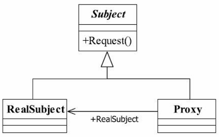

<!DOCTYPE html>
<html lang="en">
<head><meta name="generator" content="Hexo 3.8.0">
    <meta charset="utf-8">
    
    <title>
        代理模式 |
        
        YingLong</title>
    
    
        <meta name="keywords" content="设计模式，代理模式">
    
    <meta name="viewport" content="width=device-width, initial-scale=1, maximum-scale=1">
    <meta name="description" content="由于某些原因需要给某对象提供一个代理以控制对该对象的访问。访问对象不适合或者不能直接引用目标对象，代理对象作为访问对象和目标对象之间的中介。 代理模式是一个使用率非常高的模式，为其他对象提供一种代理以控制这个对象的访问。代理模式也叫做委托模式，它是一项基本设计技巧。许多其他的模式，如状态模式、策略模式、访问者模式本质上是在更特殊的场合采用了委托模式，而且在日常的应用中，代理模式可以提供非常好的访问">
<meta name="keywords" content="设计模式，代理模式">
<meta property="og:type" content="article">
<meta property="og:title" content="代理模式">
<meta property="og:url" content="https://yaoyinglong.github.io/Blog/设计模式/结构型模式/代理模式/index.html">
<meta property="og:site_name" content="YingLong">
<meta property="og:description" content="由于某些原因需要给某对象提供一个代理以控制对该对象的访问。访问对象不适合或者不能直接引用目标对象，代理对象作为访问对象和目标对象之间的中介。 代理模式是一个使用率非常高的模式，为其他对象提供一种代理以控制这个对象的访问。代理模式也叫做委托模式，它是一项基本设计技巧。许多其他的模式，如状态模式、策略模式、访问者模式本质上是在更特殊的场合采用了委托模式，而且在日常的应用中，代理模式可以提供非常好的访问">
<meta property="og:locale" content="en">
<meta property="og:image" content="https://yaoyinglong.github.io/images/设计模式/代理模式类图.png">
<meta property="og:updated_time" content="2021-04-09T06:08:06.870Z">
<meta name="twitter:card" content="summary">
<meta name="twitter:title" content="代理模式">
<meta name="twitter:description" content="由于某些原因需要给某对象提供一个代理以控制对该对象的访问。访问对象不适合或者不能直接引用目标对象，代理对象作为访问对象和目标对象之间的中介。 代理模式是一个使用率非常高的模式，为其他对象提供一种代理以控制这个对象的访问。代理模式也叫做委托模式，它是一项基本设计技巧。许多其他的模式，如状态模式、策略模式、访问者模式本质上是在更特殊的场合采用了委托模式，而且在日常的应用中，代理模式可以提供非常好的访问">
<meta name="twitter:image" content="https://yaoyinglong.github.io/images/设计模式/代理模式类图.png">
    

    

    
        <link rel="icon" href="/favicon.ico">
    

    <link rel="stylesheet" href="/libs/font-awesome/css/font-awesome.min.css">
    <link rel="stylesheet" href="/libs/open-sans/styles.css">
    <link rel="stylesheet" href="/libs/source-code-pro/styles.css">

    <link rel="stylesheet" href="/css/style.css">
    <script src="/libs/jquery/2.1.3/jquery.min.js"></script>
    <script src="/libs/jquery/plugins/cookie/1.4.1/jquery.cookie.js"></script>
    
    
        <link rel="stylesheet" href="/libs/lightgallery/css/lightgallery.min.css">
    
    
        <link rel="stylesheet" href="/libs/justified-gallery/justifiedGallery.min.css">
    
    
    
    


</head>
</html>
<body>
<div id="container">
    <header id="header">
    <div id="header-main" class="header-inner">
        <div class="outer">
            <a href="/" id="logo">
                <i class="logo"></i>
                <span class="site-title">YingLong</span>
            </a>
            <nav id="main-nav">
                
                    <a class="main-nav-link" href="/">Home</a>
                
                    <a class="main-nav-link" href="/archives">Archives</a>
                
                    <a class="main-nav-link" href="/categories">Categories</a>
                
                    <a class="main-nav-link" href="/tags">Tags</a>
                
                    <a class="main-nav-link" href="/about">About</a>
                
            </nav>
            
            <div id="search-form-wrap">
    
        <form class="search-form">
            <input type="text" class="ins-search-input search-form-input" placeholder="Search">
            <button type="submit" class="search-form-submit"></button>
        </form>
        <div class="ins-search">
    <div class="ins-search-mask"></div>
    <div class="ins-search-container">
        <div class="ins-input-wrapper">
            <input type="text" class="ins-search-input" placeholder="Type something...">
            <span class="ins-close ins-selectable"><i class="fa fa-times-circle"></i></span>
        </div>
        <div class="ins-section-wrapper">
            <div class="ins-section-container"></div>
        </div>
    </div>
</div>
<script>
    (function (window) {
        var INSIGHT_CONFIG = {
            TRANSLATION: {
                POSTS: 'Posts',
                PAGES: 'Pages',
                CATEGORIES: 'Categories',
                TAGS: 'Tags',
                UNTITLED: '(Untitled)',
            },
            ROOT_URL: '/',
            CONTENT_URL: '/content.json',
        };
        window.INSIGHT_CONFIG = INSIGHT_CONFIG;
    })(window);
</script>
<script src="/js/insight.js"></script>
    
</div>
        </div>
    </div>
    <div id="main-nav-mobile" class="header-sub header-inner">
        <table class="menu outer">
            <tr>
                
                    <td><a class="main-nav-link" href="/">Home</a></td>
                
                    <td><a class="main-nav-link" href="/archives">Archives</a></td>
                
                    <td><a class="main-nav-link" href="/categories">Categories</a></td>
                
                    <td><a class="main-nav-link" href="/tags">Tags</a></td>
                
                    <td><a class="main-nav-link" href="/about">About</a></td>
                
                <td>
                    
    <div class="search-form">
        <input type="text" class="ins-search-input search-form-input" placeholder="Search">
    </div>

                </td>
            </tr>
        </table>
    </div>
</header>

    <div class="outer">
        
        
            <aside id="sidebar">
    
        
    <div class="widget-wrap" id="categories">
        <h3 class="widget-title">
            <span>categories</span>
            &nbsp;
            <a id="allExpand" href="#">
                <i class="fa fa-angle-double-down fa-2x"></i>
            </a>
        </h3>

        
        
        
            <ul class="unstyled" id="tree">
                
                    <li class="directory">
                        <a href="#" data-role="directory">
                            <i class="fa fa-folder"></i>
                            &nbsp;
                            DB
                        </a>
                        
            <ul class="unstyled" id="tree">
                
                    <li class="file"><a href="/Blog/DB/MySQL基础/">MySQL基础</a></li>
                
                    <li class="file"><a href="/Blog/DB/MySQL常用SQL总结/">MySQL常用SQL总结</a></li>
                
                    <li class="file"><a href="/Blog/DB/分库分表/">分库分表</a></li>
                
            </ul>
        
                    </li>
                
                    <li class="directory">
                        <a href="#" data-role="directory">
                            <i class="fa fa-folder"></i>
                            &nbsp;
                            Git
                        </a>
                        
            <ul class="unstyled" id="tree">
                
                    <li class="file"><a href="/Blog/Git/GIt基本概念/">Git基本概念</a></li>
                
                    <li class="file"><a href="/Blog/Git/GIt常用命令/">Git常用命令</a></li>
                
                    <li class="file"><a href="/Blog/Git/分支管理理解/">分支管理理解</a></li>
                
            </ul>
        
                    </li>
                
                    <li class="directory">
                        <a href="#" data-role="directory">
                            <i class="fa fa-folder"></i>
                            &nbsp;
                            Go
                        </a>
                        
            <ul class="unstyled" id="tree">
                
                    <li class="file"><a href="/Blog/Go/Go基础/">Go基础</a></li>
                
            </ul>
        
                    </li>
                
                    <li class="directory">
                        <a href="#" data-role="directory">
                            <i class="fa fa-folder"></i>
                            &nbsp;
                            Java
                        </a>
                        
            <ul class="unstyled" id="tree">
                
                    <li class="directory">
                        <a href="#" data-role="directory">
                            <i class="fa fa-folder"></i>
                            &nbsp;
                            VM
                        </a>
                        
            <ul class="unstyled" id="tree">
                
                    <li class="file"><a href="/Blog/Java/VM/HotSpot收集算法实现/">HotSpot收集算法实现</a></li>
                
                    <li class="file"><a href="/Blog/Java/VM/JVM内存池/">JVM内存池</a></li>
                
                    <li class="file"><a href="/Blog/Java/VM/内存非配与回收策略/">内存分配与回收策略</a></li>
                
                    <li class="file"><a href="/Blog/Java/VM/Java内存区域/">Java内存区域</a></li>
                
                    <li class="file"><a href="/Blog/Java/VM/Minor&Major&Full GC/">Minor&Major&Full GC</a></li>
                
                    <li class="file"><a href="/Blog/Java/VM/OutOfMemoryError异常/">OOM异常实验</a></li>
                
                    <li class="file"><a href="/Blog/Java/VM/垃圾收集算法/">垃圾收集算法</a></li>
                
                    <li class="file"><a href="/Blog/Java/VM/堆中对象分配&布局&访问/">堆中对象分配&布局&访问</a></li>
                
                    <li class="file"><a href="/Blog/Java/VM/对象是否存活/">对象是否存活</a></li>
                
                    <li class="file"><a href="/Blog/Java/VM/类加载的时机/">类加载的时机</a></li>
                
                    <li class="file"><a href="/Blog/Java/VM/运行时栈帧结构/">运行时栈帧结构</a></li>
                
                    <li class="file"><a href="/Blog/Java/VM/垃圾收集器/">垃圾收集器</a></li>
                
                    <li class="file"><a href="/Blog/Java/VM/方法调用/">方法调用</a></li>
                
                    <li class="file"><a href="/Blog/Java/VM/字节码指令/">字节码指令</a></li>
                
                    <li class="file"><a href="/Blog/Java/VM/理解GC日志/">理解GC日志</a></li>
                
                    <li class="file"><a href="/Blog/Java/VM/类加载器/">类加载器</a></li>
                
                    <li class="file"><a href="/Blog/Java/VM/Class文件结构/">Class文件结构</a></li>
                
                    <li class="file"><a href="/Blog/Java/VM/属性表集合/">属性表集合</a></li>
                
                    <li class="file"><a href="/Blog/Java/VM/类加载过程/">类加载过程</a></li>
                
            </ul>
        
                    </li>
                
                    <li class="directory">
                        <a href="#" data-role="directory">
                            <i class="fa fa-folder"></i>
                            &nbsp;
                            基础
                        </a>
                        
            <ul class="unstyled" id="tree">
                
                    <li class="file"><a href="/Blog/Java/基础/lambda常用总结/">lambda常用总结</a></li>
                
                    <li class="file"><a href="/Blog/Java/基础/时间及日期总结/">Java8时间及日期</a></li>
                
                    <li class="file"><a href="/Blog/Java/基础/位运算/">位运算</a></li>
                
                    <li class="file"><a href="/Blog/Java/基础/注解实现及应用/">注解实现及应用</a></li>
                
                    <li class="file"><a href="/Blog/Java/基础/HashMap源码分析JDK8/">HashMap源码分析JDK8</a></li>
                
                    <li class="file"><a href="/Blog/Java/基础/HashMap源码分析JDK7/">HashMap源码分析JDK7</a></li>
                
                    <li class="file"><a href="/Blog/Java/基础/反射基础/">反射基础</a></li>
                
                    <li class="file"><a href="/Blog/Java/基础/动态代理/">动态代理</a></li>
                
                    <li class="file"><a href="/Blog/Java/基础/Java实用工具库/">Java实用工具库</a></li>
                
            </ul>
        
                    </li>
                
                    <li class="directory">
                        <a href="#" data-role="directory">
                            <i class="fa fa-folder"></i>
                            &nbsp;
                            工具
                        </a>
                        
            <ul class="unstyled" id="tree">
                
                    <li class="file"><a href="/Blog/Java/工具/Java中调用Groovy脚本/">Java中调用Groovy脚本</a></li>
                
                    <li class="file"><a href="/Blog/Java/工具/国密SM2/">国密SM2</a></li>
                
                    <li class="file"><a href="/Blog/Java/工具/国密SM4/">国密SM4</a></li>
                
            </ul>
        
                    </li>
                
                    <li class="directory">
                        <a href="#" data-role="directory">
                            <i class="fa fa-folder"></i>
                            &nbsp;
                            并发
                        </a>
                        
            <ul class="unstyled" id="tree">
                
                    <li class="file"><a href="/Blog/Java/并发/原子性、可见性、有序性/">原子性、可见性、有序性</a></li>
                
                    <li class="file"><a href="/Blog/Java/并发/Synchronized总结/">Synchronized总结</a></li>
                
                    <li class="file"><a href="/Blog/Java/并发/线程安全/">线程安全</a></li>
                
                    <li class="file"><a href="/Blog/Java/并发/线程安全实现方式/">线程安全实现方式</a></li>
                
                    <li class="file"><a href="/Blog/Java/并发/ThreadLocal原理/">ThreadLocal原理</a></li>
                
                    <li class="file"><a href="/Blog/Java/并发/Volatile原理/">Volatile原理</a></li>
                
                    <li class="file"><a href="/Blog/Java/并发/Java与线程/">Java与线程</a></li>
                
                    <li class="file"><a href="/Blog/Java/并发/锁优化/">锁优化</a></li>
                
                    <li class="file"><a href="/Blog/Java/并发/Java内存模型与线程/">Java内存模型</a></li>
                
            </ul>
        
                    </li>
                
                    <li class="file"><a href="/Blog/Java/JVM整体概览/">JVM整体概览</a></li>
                
            </ul>
        
                    </li>
                
                    <li class="directory">
                        <a href="#" data-role="directory">
                            <i class="fa fa-folder"></i>
                            &nbsp;
                            Linux
                        </a>
                        
            <ul class="unstyled" id="tree">
                
                    <li class="file"><a href="/Blog/Linux/Linux常用命令/">Linux常用命令</a></li>
                
                    <li class="file"><a href="/Blog/Linux/Linux常用技巧/">Linux常用技巧</a></li>
                
            </ul>
        
                    </li>
                
                    <li class="directory">
                        <a href="#" data-role="directory">
                            <i class="fa fa-folder"></i>
                            &nbsp;
                            Maven
                        </a>
                        
            <ul class="unstyled" id="tree">
                
                    <li class="file"><a href="/Blog/Maven/Maven加密JAR包/">Maven加密JAR包</a></li>
                
                    <li class="file"><a href="/Blog/Maven/Maven基础/">Maven基础</a></li>
                
                    <li class="file"><a href="/Blog/Maven/Maven常用/">Maven常用</a></li>
                
                    <li class="file"><a href="/Blog/Maven/Maven属性/">Maven属性</a></li>
                
                    <li class="file"><a href="/Blog/Maven/Maven常用工具/">Maven常用工具</a></li>
                
                    <li class="file"><a href="/Blog/Maven/Maven插件编写/">Maven插件编写</a></li>
                
                    <li class="file"><a href="/Blog/Maven/Maven生命周期/">Maven生命周期</a></li>
                
                    <li class="file"><a href="/Blog/Maven/Maven个性化打包/">Maven个性化打包</a></li>
                
                    <li class="file"><a href="/Blog/Maven/Maven仓库/">Maven仓库</a></li>
                
                    <li class="file"><a href="/Blog/Maven/Maven插件基础/">Maven插件基础</a></li>
                
                    <li class="file"><a href="/Blog/Maven/Maven聚合与继承/">Maven聚合与继承</a></li>
                
                    <li class="file"><a href="/Blog/Maven/Maven常用插件/">Maven常用插件</a></li>
                
                    <li class="file"><a href="/Blog/Maven/Maven标签全解/">Maven标签全解</a></li>
                
                    <li class="file"><a href="/Blog/Maven/Maven Assembly标签全解/">Maven Assembly标签全解</a></li>
                
            </ul>
        
                    </li>
                
                    <li class="directory">
                        <a href="#" data-role="directory">
                            <i class="fa fa-folder"></i>
                            &nbsp;
                            Python
                        </a>
                        
            <ul class="unstyled" id="tree">
                
                    <li class="file"><a href="/Blog/Python/Excel文件数据抽取/">Excel文件数据抽取</a></li>
                
            </ul>
        
                    </li>
                
                    <li class="directory">
                        <a href="#" data-role="directory">
                            <i class="fa fa-folder"></i>
                            &nbsp;
                            Test
                        </a>
                        
            <ul class="unstyled" id="tree">
                
                    <li class="file"><a href="/Blog/Test/IT测试总结/">IT测试总结</a></li>
                
                    <li class="file"><a href="/Blog/Test/JMeter日常总结/">JMeter日常总结</a></li>
                
                    <li class="file"><a href="/Blog/Test/LoadRunner日常总结/">LoadRunner日常总结</a></li>
                
                    <li class="file"><a href="/Blog/Test/UT测试总结/">UT测试总结</a></li>
                
            </ul>
        
                    </li>
                
                    <li class="directory">
                        <a href="#" data-role="directory">
                            <i class="fa fa-folder"></i>
                            &nbsp;
                            中间件
                        </a>
                        
            <ul class="unstyled" id="tree">
                
                    <li class="directory">
                        <a href="#" data-role="directory">
                            <i class="fa fa-folder"></i>
                            &nbsp;
                            Spring
                        </a>
                        
            <ul class="unstyled" id="tree">
                
                    <li class="file"><a href="/Blog/中间件/Spring/IoC容器/">IoC容器</a></li>
                
                    <li class="file"><a href="/Blog/中间件/Spring/Spring Gzip压缩/">Spring Gzip压缩</a></li>
                
                    <li class="file"><a href="/Blog/中间件/Spring/Spring整体架构/">Spring整体架构</a></li>
                
                    <li class="file"><a href="/Blog/中间件/Spring/Spring线程池跨线程数据共享/">Spring线程池跨线程数据共享</a></li>
                
                    <li class="file"><a href="/Blog/中间件/Spring/Spring知识点/">Spring知识点</a></li>
                
                    <li class="file"><a href="/Blog/中间件/Spring/SpringMvc异步/">SpringMvc异步原理及实现</a></li>
                
                    <li class="file"><a href="/Blog/中间件/Spring/Hystrix总结/">Hystrix总结</a></li>
                
                    <li class="file"><a href="/Blog/中间件/Spring/Spring初始化扩展/">Spring初始化扩展</a></li>
                
            </ul>
        
                    </li>
                
                    <li class="directory">
                        <a href="#" data-role="directory">
                            <i class="fa fa-folder"></i>
                            &nbsp;
                            常见问题
                        </a>
                        
            <ul class="unstyled" id="tree">
                
                    <li class="file"><a href="/Blog/中间件/常见问题/HBase依赖冲突/">HBase依赖冲突</a></li>
                
                    <li class="file"><a href="/Blog/中间件/常见问题/Maven编译后文件损坏/">Maven编译后文件损坏</a></li>
                
            </ul>
        
                    </li>
                
                    <li class="file"><a href="/Blog/中间件/Redis分布式锁实现/">Redis分布式锁实现</a></li>
                
                    <li class="file"><a href="/Blog/中间件/Redis总结/">Redis总结</a></li>
                
                    <li class="file"><a href="/Blog/中间件/Tomcat工作原理/">Tomcat工作原理</a></li>
                
            </ul>
        
                    </li>
                
                    <li class="directory">
                        <a href="#" data-role="directory">
                            <i class="fa fa-folder"></i>
                            &nbsp;
                            协议族
                        </a>
                        
            <ul class="unstyled" id="tree">
                
                    <li class="file"><a href="/Blog/协议族/TCPIP四层&五层模型/">TCP/IP四层&五层模型</a></li>
                
                    <li class="file"><a href="/Blog/协议族/网络基础知识/">网络基础知识</a></li>
                
                    <li class="file"><a href="/Blog/协议族/以太网/">以太网</a></li>
                
                    <li class="file"><a href="/Blog/协议族/地址解析协议/">地址解析协议ARP</a></li>
                
            </ul>
        
                    </li>
                
                    <li class="directory">
                        <a href="#" data-role="directory">
                            <i class="fa fa-folder"></i>
                            &nbsp;
                            杂记
                        </a>
                        
            <ul class="unstyled" id="tree">
                
                    <li class="file"><a href="/Blog/杂记/IDEA实用插件/">IDEA实用插件</a></li>
                
                    <li class="file"><a href="/Blog/杂记/JAVA实用工具/">JAVA实用工具</a></li>
                
                    <li class="file"><a href="/Blog/杂记/IDEA快捷的使用/">IDEA的快捷使用</a></li>
                
                    <li class="file"><a href="/Blog/杂记/Win实用工具/">Win实用工具</a></li>
                
                    <li class="file"><a href="/Blog/杂记/XSD使用总结/">XSD实用总结</a></li>
                
                    <li class="file"><a href="/Blog/杂记/SonarQube配置总结/">SonarQube配置总结</a></li>
                
            </ul>
        
                    </li>
                
                    <li class="directory">
                        <a href="#" data-role="directory">
                            <i class="fa fa-folder"></i>
                            &nbsp;
                            算法
                        </a>
                        
            <ul class="unstyled" id="tree">
                
                    <li class="file"><a href="/Blog/算法/二叉搜索树/">二叉搜索树</a></li>
                
                    <li class="file"><a href="/Blog/算法/平衡二叉树/">平衡二叉树</a></li>
                
                    <li class="file"><a href="/Blog/算法/树基础/">树基础</a></li>
                
                    <li class="file"><a href="/Blog/算法/排序算法/">排序算法</a></li>
                
                    <li class="file"><a href="/Blog/算法/图基础/">图基础</a></li>
                
            </ul>
        
                    </li>
                
                    <li class="directory">
                        <a href="#" data-role="directory">
                            <i class="fa fa-folder"></i>
                            &nbsp;
                            自度
                        </a>
                        
            <ul class="unstyled" id="tree">
                
                    <li class="file"><a href="/Blog/自度/隐形眼镜攻略/"></a></li>
                
            </ul>
        
                    </li>
                
                    <li class="directory open">
                        <a href="#" data-role="directory">
                            <i class="fa fa-folder-open"></i>
                            &nbsp;
                            设计模式
                        </a>
                        
            <ul class="unstyled" id="tree">
                
                    <li class="directory">
                        <a href="#" data-role="directory">
                            <i class="fa fa-folder"></i>
                            &nbsp;
                            创建型模式
                        </a>
                        
            <ul class="unstyled" id="tree">
                
                    <li class="file"><a href="/Blog/设计模式/创建型模式/单例模式/">单例模式</a></li>
                
                    <li class="file"><a href="/Blog/设计模式/创建型模式/原型模式/">原型模式</a></li>
                
                    <li class="file"><a href="/Blog/设计模式/创建型模式/建造者模式/">建造者模式</a></li>
                
                    <li class="file"><a href="/Blog/设计模式/创建型模式/工厂模式/">工厂模式</a></li>
                
            </ul>
        
                    </li>
                
                    <li class="directory open">
                        <a href="#" data-role="directory">
                            <i class="fa fa-folder-open"></i>
                            &nbsp;
                            结构型模式
                        </a>
                        
            <ul class="unstyled" id="tree">
                
                    <li class="file active"><a href="/Blog/设计模式/结构型模式/代理模式/">代理模式</a></li>
                
                    <li class="file"><a href="/Blog/设计模式/结构型模式/装饰模式/">装饰模式</a></li>
                
                    <li class="file"><a href="/Blog/设计模式/结构型模式/适配器模式/">适配器模式</a></li>
                
            </ul>
        
                    </li>
                
                    <li class="directory">
                        <a href="#" data-role="directory">
                            <i class="fa fa-folder"></i>
                            &nbsp;
                            行为型模式
                        </a>
                        
            <ul class="unstyled" id="tree">
                
                    <li class="file"><a href="/Blog/设计模式/行为型模式/模板方法模式/">模板方法模式</a></li>
                
                    <li class="file"><a href="/Blog/设计模式/行为型模式/中介者模式/">中介者模式</a></li>
                
                    <li class="file"><a href="/Blog/设计模式/行为型模式/命令模式/">命令模式</a></li>
                
                    <li class="file"><a href="/Blog/设计模式/行为型模式/责任链模式/">责任链模式</a></li>
                
                    <li class="file"><a href="/Blog/设计模式/行为型模式/策略模式/">策略模式</a></li>
                
            </ul>
        
                    </li>
                
                    <li class="file"><a href="/Blog/设计模式/SOLID基本原则/">SOLID基本原则</a></li>
                
                    <li class="file"><a href="/Blog/设计模式/设计模式概览/">设计模式概览</a></li>
                
            </ul>
        
                    </li>
                
                    <li class="file"><a href="/Blog/index/">Welcome YingLong's Blog</a></li>
                
            </ul>
        
    </div>
    <script>
        $(document).ready(function () {
            var iconFolderOpenClass = 'fa-folder-open';
            var iconFolderCloseClass = 'fa-folder';
            var iconAllExpandClass = 'fa-angle-double-down';
            var iconAllPackClass = 'fa-angle-double-up';
            // Handle directory-tree expansion:
            // 左键单独展开目录
            $(document).on('click', '#categories a[data-role="directory"]', function (event) {
                event.preventDefault();

                var icon = $(this).children('.fa');
                var expanded = icon.hasClass(iconFolderOpenClass);
                var subtree = $(this).siblings('ul');
                icon.removeClass(iconFolderOpenClass).removeClass(iconFolderCloseClass);
                if (expanded) {
                    if (typeof subtree != 'undefined') {
                        subtree.slideUp({duration: 100});
                    }
                    icon.addClass(iconFolderCloseClass);
                } else {
                    if (typeof subtree != 'undefined') {
                        subtree.slideDown({duration: 100});
                    }
                    icon.addClass(iconFolderOpenClass);
                }
            });
            // 右键展开下属所有目录
            $('#categories a[data-role="directory"]').bind("contextmenu", function (event) {
                event.preventDefault();

                var icon = $(this).children('.fa');
                var expanded = icon.hasClass(iconFolderOpenClass);
                var listNode = $(this).siblings('ul');
                var subtrees = $.merge(listNode.find('li ul'), listNode);
                var icons = $.merge(listNode.find('.fa'), icon);
                icons.removeClass(iconFolderOpenClass).removeClass(iconFolderCloseClass);
                if (expanded) {
                    subtrees.slideUp({duration: 100});
                    icons.addClass(iconFolderCloseClass);
                } else {
                    subtrees.slideDown({duration: 100});
                    icons.addClass(iconFolderOpenClass);
                }
            })
            // 展开关闭所有目录按钮
            $(document).on('click', '#allExpand', function (event) {
                event.preventDefault();

                var icon = $(this).children('.fa');
                var expanded = icon.hasClass(iconAllExpandClass);
                icon.removeClass(iconAllExpandClass).removeClass(iconAllPackClass);
                if (expanded) {
                    $('#sidebar .fa.fa-folder').removeClass('fa-folder').addClass('fa-folder-open')
                    $('#categories li ul').slideDown({duration: 100});
                    icon.addClass(iconAllPackClass);
                } else {
                    $('#sidebar .fa.fa-folder-open').removeClass('fa-folder-open').addClass('fa-folder')
                    $('#categories li ul').slideUp({duration: 100});
                    icon.addClass(iconAllExpandClass);
                }
            });
        });
    </script>

    
    <div id="toTop" class="fa fa-angle-up"></div>
</aside>
        
        <section id="main"><article id="post-设计模式/结构型模式/代理模式" class="article article-type-post" itemscope itemprop="blogPost">
    <div class="article-inner">
        
        
            <header class="article-header">
                
                    <div class="article-meta">
                        
    <div class="article-category">
        <i class="fa fa-folder"></i>
        <a class="article-category-link" href="/categories/设计模式/">设计模式</a><i class="fa fa-angle-right"></i><a class="article-category-link" href="/categories/设计模式/结构型模式/">结构型模式</a>
    </div>

                        
    <div class="article-tag">
        <i class="fa fa-tag"></i>
        <a class="tag-link" href="/tags/设计模式，代理模式/">设计模式，代理模式</a>
    </div>

                        
    <div class="article-date">
        <i class="fa fa-calendar"></i>
        <a href="/Blog/设计模式/结构型模式/代理模式/">
            <time datetime="2020-11-04T16:00:00.000Z" itemprop="datePublished">2020-11-05</time>
        </a>
    </div>


                        
                    </div>
                
                
    
        <h1 class="article-title" itemprop="name">
            代理模式
        </h1>
    

            </header>
        
        
        <div class="article-entry" itemprop="articleBody">
            
            
                    
            
            
                <p>由于某些原因需要给某对象提供一个代理以控制对该对象的访问。访问对象不适合或者不能直接引用目标对象，代理对象作为访问对象和目标对象之间的中介。</p>
<p>代理模式是一个使用率非常高的模式，<strong>为其他对象提供一种代理以控制这个对象的访问</strong>。代理模式也叫做<strong>委托模式</strong>，它是一项<strong>基本设计技巧</strong>。许多其他的模式，如<strong>状态模式</strong>、<strong>策略模式</strong>、<strong>访问者模式</strong>本质上是在<strong>更特殊的场合</strong>采用了<strong>委托模式</strong>，而且在日常的应用中，代理模式可以提供非常好的访问控制。</p>
<p></p>
<p>代理模式的结构比较简单，主要是通过定义一个继承抽象主题的代理来包含真实主题，从而实现对真实主题的访问；</p>
<p>抽象主题类<strong><code>Subject</code></strong>通过<strong>接口</strong>或<strong>抽象类</strong>声明<strong>真实主题</strong>和<strong>代理对象</strong>实现的业务方法：</p>
<figure class="highlight java"><table><tr><td class="gutter"><pre><span class="line">1</span><br><span class="line">2</span><br><span class="line">3</span><br></pre></td><td class="code"><pre><span class="line"><span class="keyword">public</span> <span class="class"><span class="keyword">interface</span> <span class="title">Subject</span> </span>&#123;</span><br><span class="line">    <span class="function"><span class="keyword">void</span> <span class="title">request</span><span class="params">()</span></span>;</span><br><span class="line">&#125;</span><br></pre></td></tr></table></figure>
<p>真实主题类<code>RealSubject</code>实现了<strong>抽象主题中的具体业务</strong>，是代理对象所代表的真实对象，是最终要引用的对象，为<strong>具体主题角色</strong>，也叫<strong>被委托角色</strong>或<strong>被代理角色</strong>，是<strong>业务逻辑的具体执行者</strong>：</p>
<figure class="highlight java"><table><tr><td class="gutter"><pre><span class="line">1</span><br><span class="line">2</span><br><span class="line">3</span><br><span class="line">4</span><br><span class="line">5</span><br><span class="line">6</span><br></pre></td><td class="code"><pre><span class="line"><span class="keyword">public</span> <span class="class"><span class="keyword">class</span> <span class="title">RealSubject</span> <span class="keyword">implements</span> <span class="title">Subject</span> </span>&#123;</span><br><span class="line">    <span class="meta">@Override</span></span><br><span class="line">    <span class="function"><span class="keyword">public</span> <span class="keyword">void</span> <span class="title">request</span><span class="params">()</span> </span>&#123;</span><br><span class="line">        <span class="comment">// 业务逻辑处理</span></span><br><span class="line">    &#125;</span><br><span class="line">&#125;</span><br></pre></td></tr></table></figure>
<p>代理类<code>Proxy</code>提供了<strong>与真实主题相同的接口</strong>，其内部<strong>含有对真实主题的引用</strong>，它可以<strong>访问</strong>、<strong>控制</strong>或<strong>扩展</strong>真实主题的功能，也叫<strong>委托类</strong>或<strong>代理类</strong>：</p>
<figure class="highlight java"><table><tr><td class="gutter"><pre><span class="line">1</span><br><span class="line">2</span><br><span class="line">3</span><br><span class="line">4</span><br><span class="line">5</span><br><span class="line">6</span><br><span class="line">7</span><br><span class="line">8</span><br><span class="line">9</span><br><span class="line">10</span><br><span class="line">11</span><br><span class="line">12</span><br><span class="line">13</span><br><span class="line">14</span><br></pre></td><td class="code"><pre><span class="line"><span class="keyword">public</span> <span class="class"><span class="keyword">class</span> <span class="title">Proxy</span> <span class="keyword">implements</span> <span class="title">Subject</span> </span>&#123;</span><br><span class="line">    <span class="keyword">private</span> Subject subject;</span><br><span class="line">    <span class="function"><span class="keyword">public</span> <span class="title">Proxy</span><span class="params">(Subject subject)</span> </span>&#123;</span><br><span class="line">        <span class="keyword">this</span>.subject = subject;</span><br><span class="line">    &#125;</span><br><span class="line">    <span class="meta">@Override</span></span><br><span class="line">    <span class="function"><span class="keyword">public</span> <span class="keyword">void</span> <span class="title">request</span><span class="params">()</span> </span>&#123;</span><br><span class="line">        <span class="keyword">this</span>.before();</span><br><span class="line">        <span class="keyword">this</span>.subject.request();</span><br><span class="line">        <span class="keyword">this</span>.after();</span><br><span class="line">    &#125;</span><br><span class="line">    <span class="function"><span class="keyword">private</span> <span class="keyword">void</span> <span class="title">before</span><span class="params">()</span> </span>&#123;&#125;</span><br><span class="line">    <span class="function"><span class="keyword">private</span> <span class="keyword">void</span> <span class="title">after</span><span class="params">()</span> </span>&#123;&#125;</span><br><span class="line">&#125;</span><br></pre></td></tr></table></figure>
<p>一般代理会被理解为代码增强，实际上就是在原代码逻辑前后增加一些代码逻辑，而使调用者无感知；一个代理类可以<strong>代理多个</strong>被委托者或被代理者， 因此一个代理类具体代理哪个真实主题角色， 是由场景类决定。 </p>
<p>代理模式优点<strong>职责清晰</strong>，真实的角色就是实现实际的业务逻辑，不用关心其他非本职责的事务；<strong>高扩展性</strong>；<strong>智能化</strong>。</p>
<p>根据代理的创建时期，代理模式分为<strong>静态代理</strong>和<strong>动态代理</strong>，还可以通过<strong>反射</strong>的方式实现<strong><a href="../../Java/基础/动态代理">动态代理</a></strong></p>
<h3 id="优点"><a href="#优点" class="headerlink" title="优点"></a>优点</h3><p>在客户端与目标对象之间起到一个中介作用和保护目标对象的作用</p>
<p>可以扩展目标对象的功能</p>
<p>能将客户端与目标对象分离，在一定程度上降低了系统的耦合度，增加了程序的可扩展性</p>
<h3 id="缺点"><a href="#缺点" class="headerlink" title="缺点"></a>缺点</h3><p>会造成系统设计中类的数量增加</p>
<p>在客户端和目标对象之间增加一个代理对象，会造成请求处理速度变慢</p>
<p>增加了系统的复杂度</p>
<h3 id="应用场景"><a href="#应用场景" class="headerlink" title="应用场景"></a>应用场景</h3><p>当无法或不想直接引用某个对象或访问某个对象存在困难时，可以通过代理对象来间接访问。使用代理模式主要有两个目的：<strong>保护目标对象</strong>，<strong>增强目标对象</strong>。</p>
<ul>
<li>远程代理，通常是为了隐藏目标对象存在于不同地址空间的事实，方便客户端访问。</li>
<li>虚拟代理，通常用于要创建的目标对象开销很大时。</li>
<li>安全代理，通常用于控制不同种类客户对真实对象的访问权限。</li>
<li>智能指引，主要用于调用目标对象时，代理附加一些额外的处理功能。</li>
<li>延迟加载，指为了提高系统的性能，延迟对目标的加载。</li>
</ul>

        </div>
        
    <footer class="article-footer">
    </footer>
    </div>
</article>


    
    <nav id="article-nav">
        
        
            <a href="/Blog/设计模式/创建型模式/建造者模式/" id="article-nav-older" class="article-nav-link-wrap">
                <strong class="article-nav-caption">Older</strong>
                <div class="article-nav-title">建造者模式</div>
            </a>
        
    </nav>


    
    


    <!-- baidu url auto push script -->
    <script type="text/javascript">
        !function () {
            var e = /([http|https]:\/\/[a-zA-Z0-9\_\.]+\.baidu\.com)/gi, r = window.location.href,
                o = document.referrer;
            if (!e.test(r)) {
                var n = "//api.share.baidu.com/s.gif";
                o ? (n += "?r=" + encodeURIComponent(document.referrer), r && (n += "&l=" + r)) : r && (n += "?l=" + r);
                var t = new Image;
                t.src = n
            }
        }(window);
    </script>
</section>
    </div>
    <footer id="footer">
    <div class="outer">
        <div id="footer-info" class="inner">
            YaoYingLong &copy; 2021
            <!-- <a rel="license" href="http://creativecommons.org/licenses/by-nc-nd/4.0/"></a> -->
            <br> Powered by <a href="http://hexo.io/" target="_blank" rel="external nofollow noopener noreferrer">Hexo</a>. Theme - <a href="https://github.com/zthxxx/hexo-theme-Wikitten" rel="external nofollow noopener noreferrer" target="_blank">wikitten</a>
        </div>
    </div>
</footer>
    

    
        <script src="/libs/lightgallery/js/lightgallery.min.js"></script>
        <script src="/libs/lightgallery/js/lg-thumbnail.min.js"></script>
        <script src="/libs/lightgallery/js/lg-pager.min.js"></script>
        <script src="/libs/lightgallery/js/lg-autoplay.min.js"></script>
        <script src="/libs/lightgallery/js/lg-fullscreen.min.js"></script>
        <script src="/libs/lightgallery/js/lg-zoom.min.js"></script>
        <script src="/libs/lightgallery/js/lg-hash.min.js"></script>
        <script src="/libs/lightgallery/js/lg-share.min.js"></script>
        <script src="/libs/lightgallery/js/lg-video.min.js"></script>
    
    
        <script src="/libs/justified-gallery/jquery.justifiedGallery.min.js"></script>
    
    
        <script type="text/x-mathjax-config">
    MathJax.Hub.Config({
        tex2jax: {
            inlineMath: [ ["$","$"], ["\\(","\\)"] ],
            skipTags: ['script', 'noscript', 'style', 'textarea', 'pre', 'code'],
            processEscapes: true,
            TeX: {
                equationNumbers: {
                  autoNumber: 'AMS'
                }
            }
        }
    });
    MathJax.Hub.Queue(function() {
        var all = MathJax.Hub.getAllJax();
        for (var i = 0; i < all.length; ++i)
            all[i].SourceElement().parentNode.className += ' has-jax';
    });


</script>
<script async src="//cdnjs.cloudflare.com/ajax/libs/mathjax/2.7.1/MathJax.js?config=TeX-AMS-MML_HTMLorMML"></script>
    


<!-- Custom Scripts -->
<script src="/js/main.js"></script>

</div>
</body>
